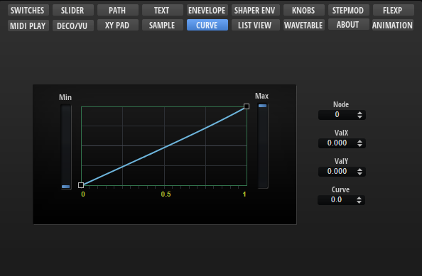

/ HALion Developer Resource / HALion Macro Page / Templates /
Curve Editor
On this page:

Description
The Curve Editor template allows you to display and edit curves, such as the custom curve of the Velocity Curve MIDI module or the modulation matrix, for example. The template contains controls to adjust the values of the selected node and the minimum and maximum of the curve. These controls must be part of the template and they must use the UI variables as defined in the template to connect with the Curve Editor Control.
❕ The Curve Editor Control cannot be created manually in the GUI Tree. Please load the template from the Basic Controls library to use it. You can adapt the look and feel of the template to the requirements of your macro page with the Properties and Colors as described below. If certain controls are not required or wanted, they can be removed.
To explore the functionality and connections:
- Load the Init Basic Controls.vstpreset from the Basic Controls library.
- Open the Macro Page Designer, go to the GUI Tree and navigate to "Pages > Curve Editor Page".
- Select "Curve Editor" and click Edit Element
 to examine the template.
to examine the template.
Template Properties
| Poperty | Description |
|---|---|
| Name | The name of the element. This name will be displayed in the GUI Tree. |
| Position/Size | Position X, Position Y, Width, Height: Position and size of the element in pixels. Position X/Y defines the position of the upper left corner. |
| Attach | Defines how an element behaves when its parent element is resized. You can set the following parameters:
|
| Tooltip | Text that appears as a tooltip when the mouse hovers over the element. |
| Template | Determines the template to be referenced. |
Template Parameters
| Parameter | Description |
|---|---|
| Curve Data | Connect this to the FuncData parameter of the Velocity Curve MIDI module, for example. |
| Min | Compresses the curve vertically from the bottom. Connect this to the Minimum parameter of a Velocity Curve MIDI module, for example. |
| Max | Compresses the curve vertically from the top. Connect this to the Maximum parameter of a Velocity Curve MIDI module, for example. |
| Play Pos | Allows you to connect a parameter that sends the current value on the curve, e.g., input to output velocity. |
Components inside the Template

UI Variables
The following variables are needed to allow the communication between the curve editor and other controls in the template.
| Variable | Description | Type | Range |
|---|---|---|---|
| curve | The curvature of the selected node. | float | -10 - 10 |
| valY | The y-value of the selected node. | float | 0 - 1 |
| valX | The x-value of the selected node. | float | 0 - 1 |
| index | The index of the selected node. | integer | 0 - 100 |
Controls and Subtemplates
| Item | Description |
|---|---|
| curveeditor | The Curve Editor control. The properties FuncData, Minimum, and Maximum are exported and thus are available as template parameters. The exported Minimum and Maximum properties and the exported Value property of Slider Min and Slider Max (see below) share the same name for the template parameters and therefore appear only as one template parameter, Min and Max respectively, on the instance level of the template. For more details about the configuration of the control, see Curve Editor Control. |
| Slider Max | A slider template. The Value property of this slider template is exported and thus available as template parameter. It shares the name Maxwith the exported Maximum property of the Curve Editor control. Therefore, both exported properties appear only as one template parameter. |
| Slider Min | A slider template. The Value property of this slider template is exported and thus available as template parameter. It shares the name Minwith the exported Minimum property of the Curve Editor control. Therefore, both exported properties appear only as one template parameter. |
| Edit | A group of valuebox templates for displaying and editing the values of the selected node. The controls are connected to the Curve Editor control by the UI variables defined above. The respective UI variable must be set as Value to establish the connection.
|
| image | A Bitmap resource for an embedded frame around the curve editor. |
Curve Editor Control
The look and feel of the Curve Editor control can be configured with the following properties and colors.
Properties
| Property | Description |
|---|---|
| Name | The name of the element. This name will be displayed in the GUI Tree. |
| Position/Size | Position X, Position Y, Width, Height: Position and size of the element in pixels. Position X/Y defines the position of the upper left corner. |
| Attach | Defines how an element behaves when its parent element is resized. You can set the following parameters:
|
| Tooltip | Text that appears as a tooltip when the mouse hovers over the element. |
| Style |
|
| FuncData | Export this property to the instance level of the template and connect the corresponding template parameter to the FuncData parameter of the Velocity Curve MIDI module, for example. |
| Grid |
|
| Selected Node |
|
| Minimum | Compresses the curve vertically from the bottom. Export this property to the instance level of the template and connect the corresponding template parameter to the Minimum parameter of the Velocity Curve MIDI module, for example. |
| Maximum | Compresses the curve vertically from the top. Export this property to the instance level of the template and connect the corresponding template parameter to the Maximum parameter of the Velocity Curve MIDI module, for example. |
| Play Pos | Allows you to connect a parameter that sends the current value on the curve, e.g., input to output velocity. The Play Pos style must be activated to get access to this. |
Colors
❕ Some colors are only available if the corresponding Style options are active.
| Property | Description |
|---|---|
| Line | Line color between the nodes. |
| Fill | Fill color of the nodes. |
| FillSelected | Fill color of the selected node. |
| FrameFocus | Frame color of the focussed node. |
| Frame | Frame color of the nodes. |
| Hover | Hover frame color of the nodes. |
| Crosshair | Node edit crosshair color. |
| Play Pos | Color of the position indicator of the current value on the curve. |
| Border | Overall border color. |
| Grid V | Vertical grid color. |
| Grid V2 | Vertical fine grid color. |
| Grid V3 | Additional vertical fine grid color. |
| Grid H | Horizontal grid color. |
| Grid H2 | Horizontal fine grid color. |
| Scale | Scale font color. |